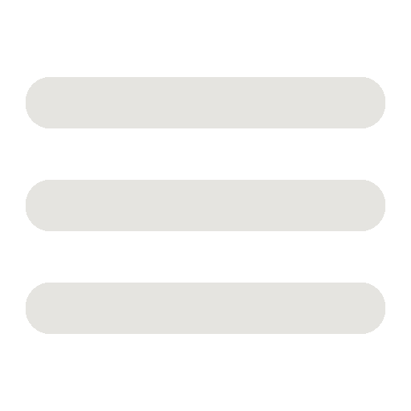

<!-- Imports del proyecto-->
<link rel="import" href="../../bower_components/paper-header-panel/paper-header-panel.html">
<link rel="import" href="../../bower_components/iron-flex-layout/iron-flex-layout-classes.html">
<link rel="import" href="../../../dist/_include-media.scss">
<dom-module id="my-header">
  <template>
    <style is="custom-style" include="iron-flex-alignment iron-flex iron-flex-factors">
      :host {
        font-family: 'Franklin Gothic Medium', 'Arial Narrow', Arial, sans-serif;
        display: inline-block;
        background-color: antiquewhite;
      }

      .header {
        background-color: #001f3f;
      }


      .space {
        padding: 5px 12px;
        box-sizing: border-box;
      }

      #titulo {
        display: inline-block;
      }

      #text_img {
        font-size: 14px;
      }

      #img_polymer {
        height: 100%;

      }

      .opciones {
        font-size: 18px;
        float: rigth;
      }

      .opciones:hover {
        color: #0074D9;

      }

      a {
        text-decoration: none;
      }

      a:link,
      active,
      hover {
        color: #ffffff;
      }

      a:visited {
        color: #ffffff;
      }

      paper-toolbar {
        --paper-toolbar-content: {
          width: 100%;
          padding: 0;
        }
      }

      .wrap_image {
        height: 100%;
      }

      .navbar-toggle {
        display: inline-block;
        padding: 0;
        outline: none;
        margin: 0;
        position: relative;
        margin-top: 8px;
        background-color: transparent;
        background-image: none;
        border: 1px solid transparent;
        border-radius: 4px;
      }

      #menu {
        display: none;
        height: 25px;
        width: 25px;
        margin-right: 20px;
        color: white;
      }

      .dropdown {
        display: none;
      }

      @media (min-width: 600px) {
        .dropdown {
          display: none;
        }
      }

      @media (max-width: 600px) {
        .opciones {
          display: none;
        }
        .navbar-toggle {
          display: inline-block;
        }
        #menu {
          display: inline-block;
        }
        .dropdown {
          min-width: 100%;
          position: absolute;
          background-color: #36486b;
          visibility: hidden;
          text-decoration: none;
          z-index: 10000;
          /* list-style-type: none; */
        }
        .active {
          visibility: visible !important;
          display: inline-block !important;
          height: 100px;
        }
        li {
          list-style-type: none;
        }
        .open_menu {
          width: 100%;
          font-size: 25px;
          box-sizing: border-box;
          outline: none;
          font-family: msyi, sans-serif;
          font-family: msyi, sans-serif;
        }
        .open_menu:hover {
          color: #001f3f !important;
        }
      }
    </style>
    <paper-header-panel class="flex">
      <paper-toolbar class="horizontal layout center header">
        <h1 id="titulo" class="space">
          <a href="/">SANDBOX</a>
        </h1>
        <div class='flex wrap_image space horizontal layout center'>
          <p id="text_img">Hecho con: </p>
          
        </div>
        <!--METER UN ICONO AQUÍ-->

        <a href="/instructions" class="opciones space" id="inst">Instrucciones</a>
        <a href="/contact" class="end layout opciones space" id="contacto">Contacto</a>
        <button class="navbar-toggle" type="button" on-click="toggle_menu">
          
        </button>
      </paper-toolbar>
    </paper-header-panel>
    <div id="dropdown_list" class="dropdown">
      <ul class="vertical layout">
        <li>
          <a on-click="toggle_menu" href="/instructions" class="open_menu">Instrucciones</a>
        </li>
        <li>
          <a on-click="toggle_menu" href="/contact" class="open_menu">Contacto</a>
        </li>
      </ul>
    </div>
  </template>
  <script>
    Polymer({
      is: 'my-header',
      properties: {
        menu_opened: {
          type: Boolean,
          value: false
        }
      },
      toggle_menu: function () {
        this.menu_opened = !this.menu_opened;
        this.toggleClass("active", this.menu_opened, this.$.dropdown_list);
      },
    });
  </script>
</dom-module>